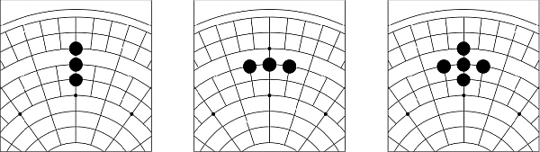
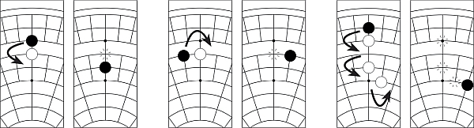

One
Board Game Arena 官方规则文档
For tips on how to play one, see Tips_one
Overview
- ONE is a simple strategy game for 2-6 players.
- Your goal is to form the ONE largest group of connected stones.
- Capture opponents' stones to block their expansion and add points to your score.
- At the end of the game, the player with the highest score wins.
Game play
- Players take turns to either:
- Place a stone, or
- Capture a stone
Place a stone
- A stone of the player's colour may be placed on any empty intersection on the board.
- Stones are connected if they are on adjacent intersections with a line between them.
- Stones placed diagonally are not connected.
- Here are some examples of connected stones:

Captures
- Instead of placing a stone, a player may choose to capture one of their opponent's stones.
- Captured stones count for two points.
- A player may only capture an opponent's stone if:
- Their stone is adjacent to the stone being captured, and
- There is an empty intersection directly on the opposite side of the opponent's stone.
- Multiple captures are permitted, even if they are of multiple colours.
- You may not capture diagonally, or capture your own stones.
- Here are some examples of legal captures:

Captures on BGA
- To make a capture:
- Select your stone
- Select the empty intersection opposite your opponent's stone.
- With the Training Labels option enabled, stones with captures available will be marked with an A.
Game End
- When a player runs out of stones, the game ends just before the turn of the starting player.
Scoring
Player score = [# of stones in the largest connected group] + 2 × [# of captured stones]- The player with the highest score wins.